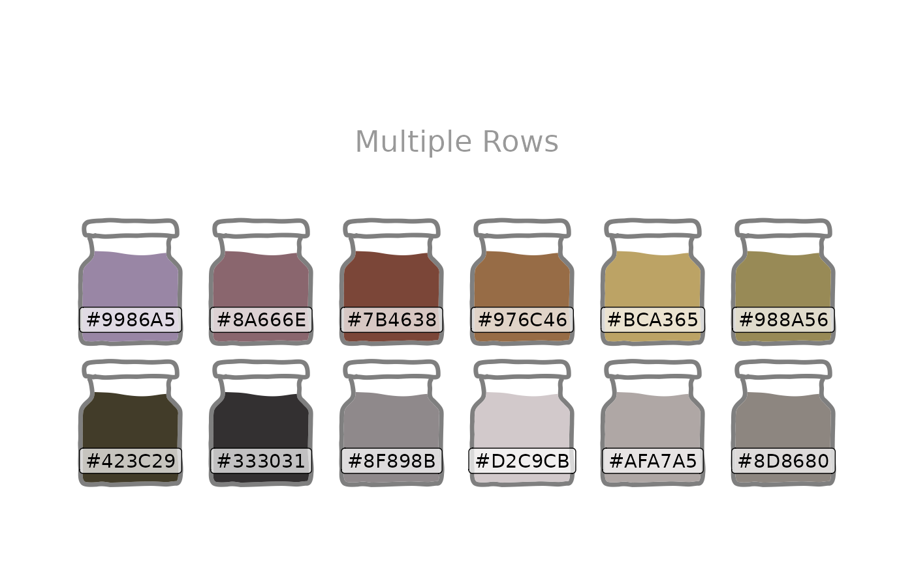

![[Experimental]](figures/lifecycle-experimental.svg)
Creates a visualisation of a chosen palette with each colour in the selected fillable shape.
Usage
display_palette(
fill,
pal_name,
colour = "grey50",
color = colour,
shape = c("jar", "tube")
)Examples
display_palette(
c("skyblue", "lightgreen", "pink", "bisque"),
"Custom Palette Names"
)
display_palette(
c("#9986A5", "#79402E", "#CCBA72", "#0F0D0E", "#D9D0D3", "#8D8680"),
"Vector of Hex Codes",
shape = "tube",
colour = "black"
)
display_palette(
c(
"#423C29", "#333031", "#8F898B", "#D2C9CB", "#AFA7A5", "#8D8680",
"#9986A5", "#8A666E", "#7B4638", "#976C46", "#BCA365", "#988A56"
),
"Multiple Rows"
)
